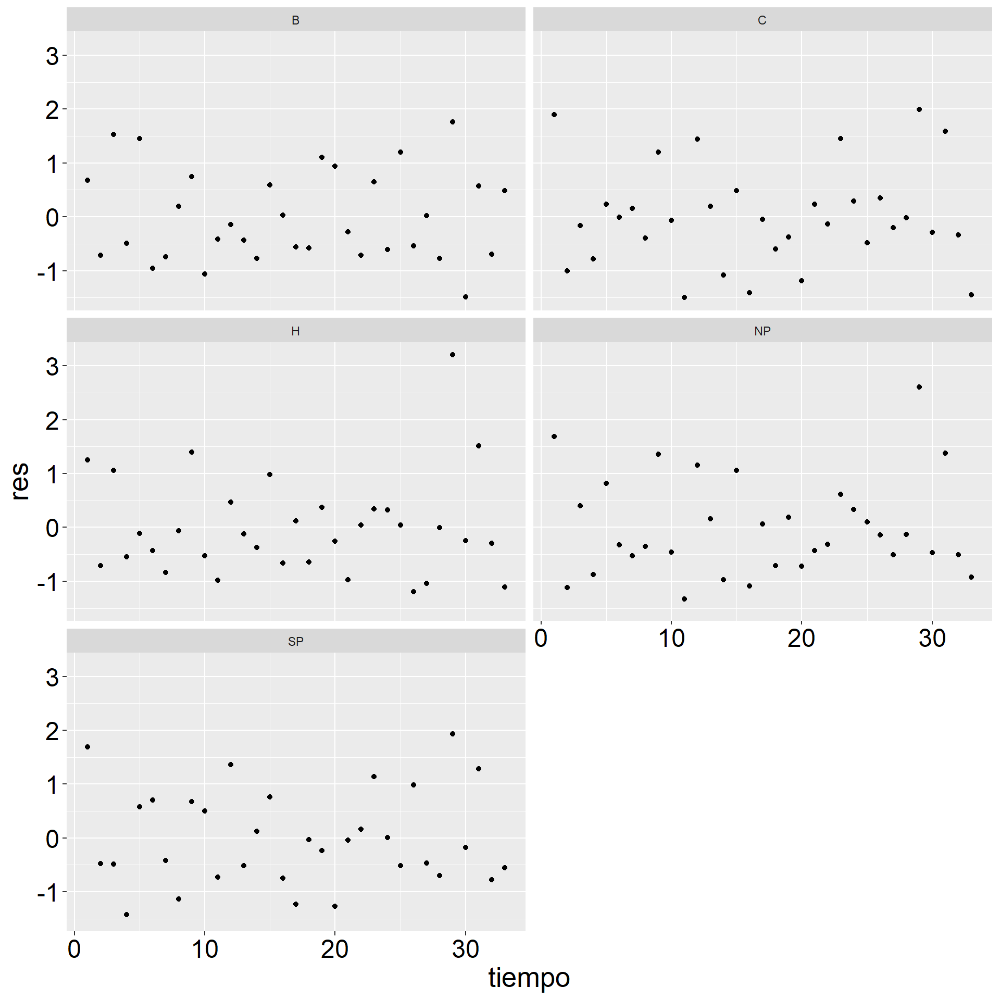
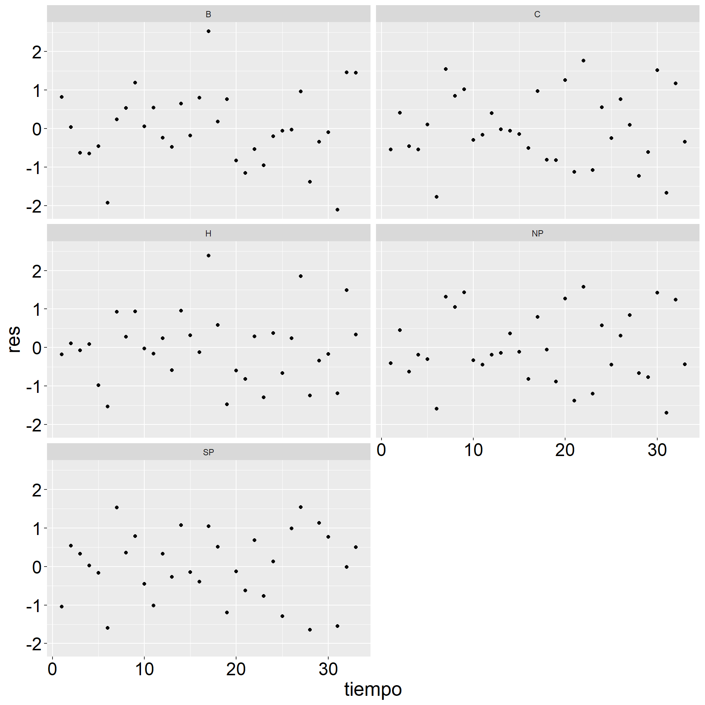
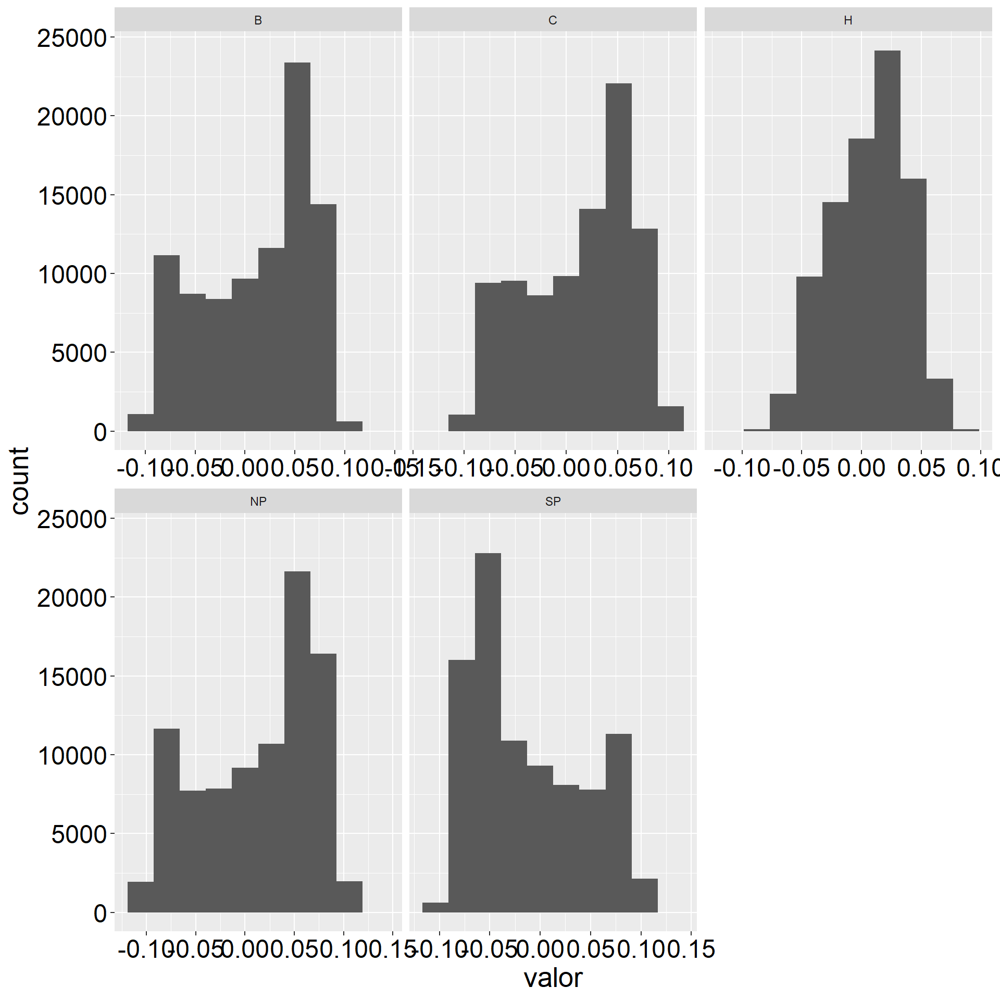
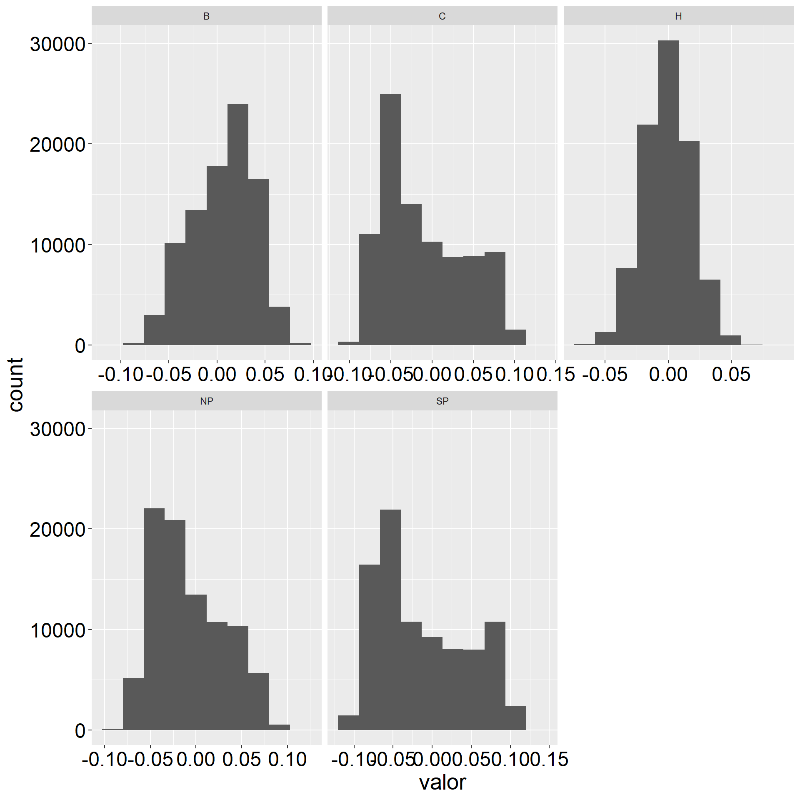
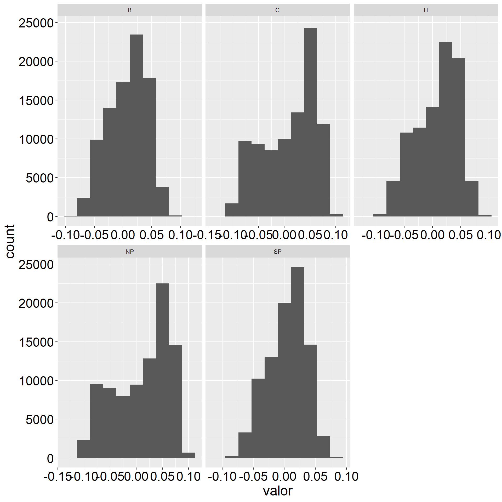
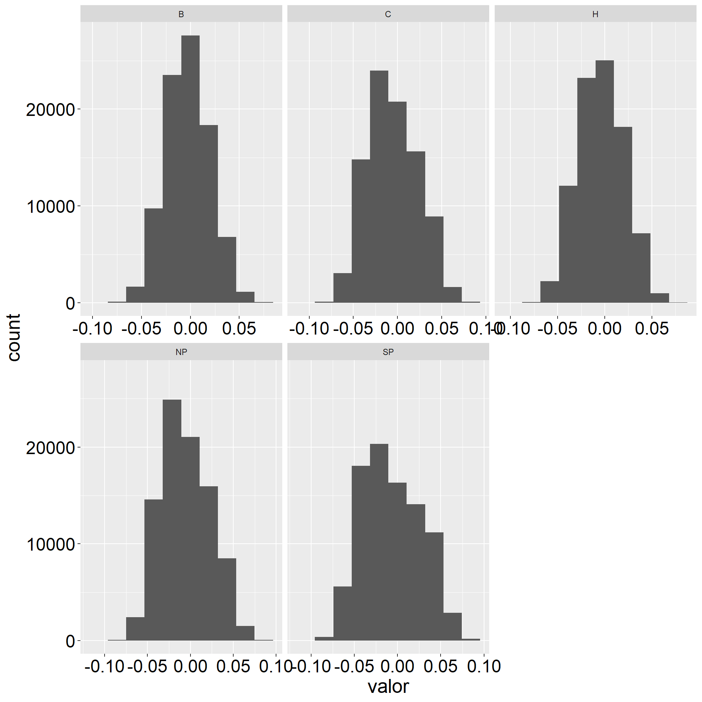
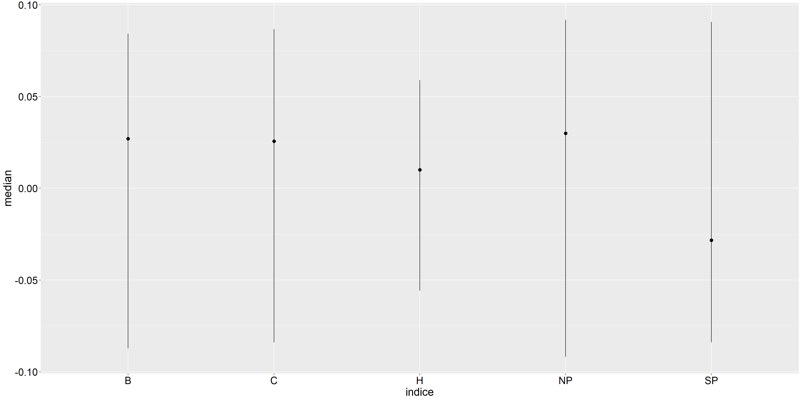
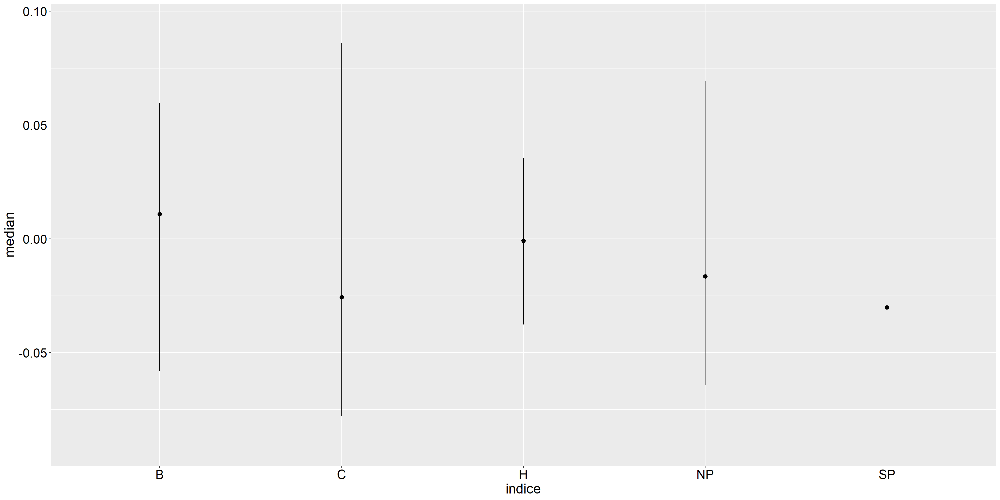
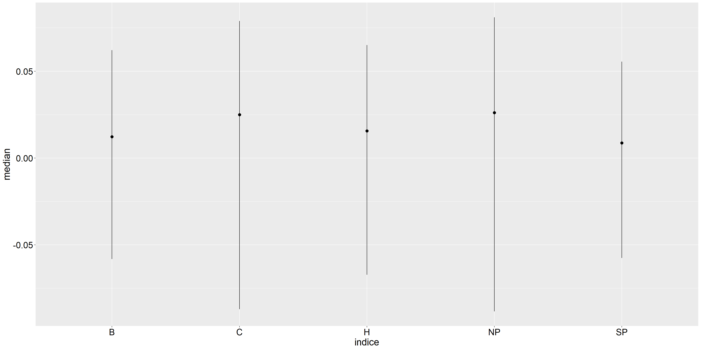
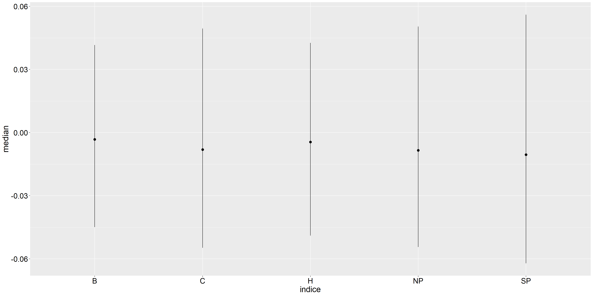

intercept Ft.lp amv.lp cllj nino pdo.orth
B -1.7559 4.5907 -7.3049 -0.2875 -0.0337 0.1685
C -1.6883 3.5647 -6.6517 0.1448 0.0968 0.0342
H -0.5828 1.3222 -2.6097 0.0121 -0.0429 0.0398
NP -2.0839 4.8433 -8.4884 -0.0336 0.0889 0.1310
SP 1.9511 -5.0087 7.4616 0.3137 0.1929 -0.0849Reporte - Indices estacionales
1 Paso 1
Para cada cluster \(i=1,...,5\), ajustar una regresión lineal para cada índice 1:4 como variable dependiente contra las 5 covariables observadas históricas (ft, amv, cllj, nino, pdo) que varia por estación. Estas covariables se filtran por estación y años 1984-2016 para ajustar el mismo período que los índices climáticos. Explícitamente: Para \(i=1,…5,~~j=1,...,25\),
\[indice_{ij} = \beta_0 + \beta_1~~ft + \beta_2~~amv + \beta_3~~cllj + \beta_4~~nino + \beta_5~~pdo + \epsilon_{ij}\] Notación: B= Belize, C=Caribbean, H=Honduras, NP= North Pacific, SP=South Pacific.
2 Paso 2
Verificar los supuestos de cada regresión y obtención de los coeficientes estimados de betas.
2.1 Coeficientes estimados
2.1.1 Estacion 1
2.1.2 Estacion 2
intercept Ft.lp amv.lp cllj nino pdo.orth
B -1.9877 4.1953 -2.9903 -0.2195 0.3354 0.2189
C 1.7635 -3.8351 5.5509 0.1795 0.5611 0.1225
H -0.3994 0.8298 0.2048 0.0769 0.4464 0.0651
NP 0.9989 -2.1408 3.3012 0.2141 0.6406 0.1655
SP 1.5053 -3.5181 7.9308 -0.0202 0.1842 0.03862.1.3 Estacion 3
intercept Ft.lp amv.lp cllj nino pdo.orth
B -0.8939 1.5531 -2.9416 0.0854 0.0282 -0.2103
C 0.0513 0.7706 -5.7490 -0.1692 -0.0771 -0.1987
H -0.4367 1.1166 -3.3009 -0.0596 -0.1154 -0.3313
NP -0.5678 1.7473 -6.0428 -0.1006 -0.0096 -0.2523
SP 0.2920 0.0149 -1.9998 -0.2027 0.2977 -0.42592.1.4 Estacion 4
intercept Ft.lp amv.lp cllj nino pdo.orth
B -0.1956 0.3743 1.0386 -0.0133 0.0968 0.1294
C 0.3630 -0.8301 2.1540 -0.0180 -0.3254 0.1060
H 0.7789 -0.4814 2.3096 0.2919 -0.3771 -0.0166
NP 0.1784 -0.2348 2.3654 0.0509 -0.3354 0.0617
SP 0.9553 -1.6380 3.7053 0.1616 -0.3238 -0.18972.2 Gráficos de errores
2.2.1 Estacion 1
2.2.2 Estacion 2

2.2.3 Estacion 3
2.2.4 Estacion 4

Nota: Se puede hacer más pruebas estadísticas relacionadas a los errores. Hasta este punto solamente grafiqué los errores para cada índice del cluster.
3 Paso 3.
Simulo los 4 índices para cada cluster, con las 4 covariables sintéticas (amv, cllj, niño, pdo) de 1000 repeticiones cada una, junto con los coeficientes estimados del modelo de regresión desde 1900 a 2022. Nota: Aquí entiendo que no se debe usar la variable ft. Aquí es equivalente suponer el modelo con ft cero. Explícitamente:
\[indice_{ij} = \hat{\beta}_0 + \hat{\beta}_2~~amv + \hat{\beta}_3~~cllj + \hat{\beta}_4~~nino + \hat{\beta}_5~~pdo + \epsilon_{ij}\]
4 Paso 4.
Debido a que 1984 a 2016 es un período de 33 años, entonces con las series sintéticas de 1900 a 2022 se calculan todas las tendencias de 33 años, para cada uno de los períodos de: 1900 a 1932 años, 1901 a 1933 años, 1903 a 1934 años, …., 1990:2022. Esto se hace para todas las 1000 simulaciones y se ponen todas estas tendencias. Los intervalos de confianza de todas estas tendencias al 95% de confianza se usan para hacer las barritas rojas del gráfico.
4.1 Histogramas de las betas de tendencia
4.1.1 Estacion 1

4.1.2 Estacion 2

4.1.3 Estacion 3

4.1.4 Estacion 4

4.2 percentiles 2.5, mediana y 97.5 de las betas de tendencia
4.2.1 Estacion 1

4.2.2 Estacion 2

4.2.3 Estacion 3

4.2.4 Estacion 4
